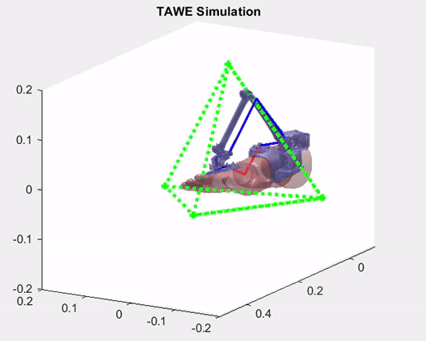

Tremor Suppressing Exoskeleton
Masters Thesis Project
Developed a Model Predictive Controller for the wearable exoskeleton (TAWE) for full-wrist pathological tremor alleviation
The Simulation has been done in MATLAB using the ANDY Toolbox, developed in our lab. The main motivation for using MPC here relies on its ability to incorporate state and input constraints, which are crucial for the user’s safety. The forearm-exoskeleton model is successively linearized at each time sample to obtain a linear state space model. The optimal input is then generated by minimizing a convex quadratic cost function.
